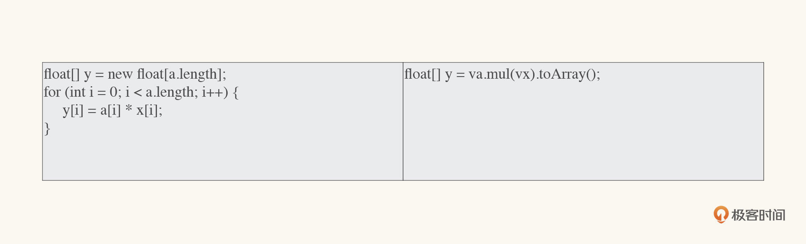

- 00 开篇词 拥抱Java新特性，像设计者一样工作和思考.md.html
- 01 JShell：怎么快速验证简单的小问题？.md.html
- 02 文字块：怎么编写所见即所得的字符串？.md.html
- 03 档案类：怎么精简地表达不可变数据？.md.html
- 04 封闭类：怎么刹住失控的扩展性？.md.html
- 05 类型匹配：怎么切除臃肿的强制转换？.md.html
- 06 switch表达式：怎么简化多情景操作？.md.html
- 07 switch匹配：能不能适配不同的类型？.md.html
- 08 抛出异常，是不是错误处理的第一选择？.md.html
- 09 异常恢复，付出的代价能不能少一点？.md.html
- 10 Flow，是异步编程的终极选择吗？.md.html
- 11 矢量运算：Java的机器学习要来了吗？.md.html
- 12 外部内存接口：零拷贝的障碍还有多少？.md.html
- 13 外部函数接口，能不能取代Java本地接口？.md.html
- 14 禁止空指针，该怎么避免崩溃的空指针？.md.html
- 15 现代密码：你用的加密算法过时了吗？.md.html
- 16 改进的废弃，怎么避免使用废弃的特性？.md.html
- 17 模块系统：为什么Java需要模块化？.md.html
- 18 模块系统：怎么模块化你的应用程序？.md.html
- 用户故事 与新特性开发者对话.md.html
- 用户故事 保持好奇心，积极拥抱变化.md.html
- 捐赠
11 矢量运算：Java的机器学习要来了吗？
你好，我是范学雷。今天，我们讨论Java的矢量运算。
Java的矢量运算，我写这篇文章的时候还在孵化期，还没有发布预览版。我们之所以选取了这样一个还处于孵化期的技术，主要是因为这个技术代表了Java语言发展的一个重要方向，在未来一定会有着重要的影响。早一点了解这样的技术，除了扩展视野之外，还能够帮助我们制定未来几年要学习或者要使用的技术路线。
我们从阅读案例开始，看一看没有矢量运算的时候，Java是怎么支持科学计算的；然后，我们再看看矢量运算能够带来什么样的变化。
阅读案例
我想，你对线性方程（或者说一次方程）一定不陌生。一般情况下，我们可以把线性方程表述成下面的形式。
其中\(a\_{0}\)，\(a\_{1}\)，\(a\_{n-1}\)表示的是常数，\(x\_{0}\)，\(x\_{1}\)，\(x\_{n-1}\)表示的是变量，而\(y\)就表示\(a\_{i}\)和\(x\_{i}\)的组合结果。\(n\)表示未知变量的数目，通常，我们也把它称为方程的维度。
如果给定方程式右边的常数和变量，我们就能计算出方程式左边的\(y\)数值了。那么，该怎么用代码表示这个方程式呢？我们可以把\(a\_{0}\)，\(a\_{1}\)，\(a\_{n-1}\)表示的常数放到一个数组里，把\(x\_{0}\)，\(x\_{1}\)，\(x\_{n-1}\)表示的变量放到另外一个数组里。下面的代码里，变量a和x就可以用来表示一个有四个维度的一次方程组。
static final float[] a = new float[] {0.6F, 0.7F, 0.8F, 0.9F};
static final float[] x = new float[] {1.0F, 2.0F, 3.0F, 4.0F};
能用Java的变量来表示一次方程，我们也就能够计算线性方程的结果了。下面的代码，就是一个实现的办法。
private static Returned<Float> sumInScalar(float[] a, float[] x) {
if (a == null || x == null || a.length != x.length) {
return new Returned.ErrorCode(-1);
}
float[] y = new float[a.length];
for (int i = 0; i < a.length; i++) {
y[i] = a[i] * x[i];
}
float r = 0F;
for (int i = 0; i < y.length; i++) {
r += y[i];
}
return new Returned.ReturnValue<>(r);
}
在上面的代码里，我们先计算\(a\_{i}\)和\(x\_{i}\)的乘积，然后再计算乘积结果的总和。其中的乘法运算，就是我们常说的标量运算。为了方便讨论，我把乘法运算的代码单独拿出来，粘贴在下面。
float[] y = new float[a.length];
for (int i = 0; i < a.length; i++) {
y[i] = a[i] * x[i];
}
如果我们仔细观察线性方程就会发现，对于每一个纬度，\(a\_{i}\)和\(x\_{i}\)是互不影响的， 当然它们的乘积也是互不影响的。既然每个维度的计算都互不影响，那么我们能不能并行计算呢？
矢量运算
Java的矢量运算就是使用单个指令并行处理多个数据的一个尝试（单指令多数据，Single Instruction Multiple Data）。
在现代的微处理器（CPU）中，一个控制器可以控制多个平行的处理单元；在现代的图形处理器（GPU）中呢，更是拥有强大的并发处理能力和可编程流水线。这些处理器层面的技术，为软件层面的单指令多数据处理提供了物理支持。Java矢量运算的设计和实现，也是希望能够借助现代处理器的这种能力，提高运算的性能。
为了使用单指令多数据的指令，我们需要把不同数据的运算独立出来，让并行运算成为可能。而数学里的矢量运算，恰好就能满足这样的要求。
如果使用矢量，我们可以把线性方程表述成下面的形式（使用向量的数量积形式）：

其中，\(a\)，\(x\)和\(y^{'}\)是三个n维的矢量。
- 好了，现在我们可以看看Java是怎么表达矢量的了。下面代码里的变量a，和前面阅读案例里a是一样的，它以数组的形式表示；变量va，就是变量a的矢量表达形式。fromArray这个方法，可以把一个数组变量，转换成一个矢量的变量。
static final float[] a = new float[] {0.6F, 0.7F, 0.8F, 0.9F};
static final FloatVector va =
FloatVector.fromArray(FloatVector.SPECIES_128, a, 0);
static final float[] x = new float[] {1.0F, 2.0F, 3.0F, 4.0F};
static final FloatVector vx =
FloatVector.fromArray(FloatVector.SPECIES_128, x, 0);
有了表示矢量的办法，我们就可以试着使用矢量运算的办法，来计算线性方程的结果了。下面的代码，就是一个简化了的实现。
private static Returned<Float> sumInVector(FloatVector va, FloatVector vx) {
if (va == null || vx == null || va.length() != vx.length()) {
return new Returned.ErrorCode(-1);
}
// FloatVector vy = va.mul(vx);
float[] y = va.mul(vx).toArray();
float r = 0F;
for (int i = 0; i < y.length; i++) {
r += y[i];
}
return new Returned.ReturnValue<>(r);
}
这个运算的关键部分是其中的矢量运算，也就是下面这行代码。
FloatVector vy = va.mul(vx);
和上面的标量运算的办法相比，矢量运算的代码精简了很多。这是矢量运算的第一个优点。但它的优点还不止于此。

飙升的性能
我们前面提到，Java矢量运算的设计，主要是为了性能。 那么，性能的提升能有多大呢？ 我自己做了一个性能测试。虽然这个特性还处于孵化期，但是它的性能测试结果还是很令人振奋的。 就上面这个简单的、四维的矢量来说，和我们在阅读案例里使用的标量运算相比，矢量运算的性能提高了足足有10倍。
Benchmark Mode Cnt Score Error Units
VectorBench.scalarComputation thrpt 15 180635563.597 ± 30893274.582 ops/s
VectorBench.vectorComputation thrpt 15 1839556188.443 ± 153876900.442 ops/s
对于一个还处于孵化阶段的实现来说，这么大的性能提升是有点超出预料的。
在密码学和机器学习领域，通常需要处理几百甚至几千维的数据。一般情况下，为了能够使用处理器的计算优势，我们经常需要特殊的设计以及内嵌于JVM的本地代码来获得硬件加速。这样的限制，让普通代码的计算很难获得硬件加速的好处。
希望成熟后的Java矢量运算，能在这些领域有出色的表现，让普通的代码获得处理器的单指令多数据的强大运算能力。毕竟，只有单指令多数据的优势能够被普通的Java应用程序广泛使用，Java才能在机器学习、科学计算这些领域获得计算优势。
如果从机器学习在未来的重要性来说，Java在科学计算领域的拓展来得也许正是时候。
总结
好，到这里，我来做个小结。前面，我们讨论了Java的矢量运算这个尚处于孵化阶段的新特性，对Java的矢量运算这个新特性有了一个初始的印象。
如果Java矢量运算成熟起来，许多领域都可以从这个新特性中受益，包括但是不限于机器学习、线性代数、密码学、金融和JDK 本身的代码。
这一次学习的主要目的，就是让你对矢量运算有一个基本的印象。这样的话，如果你的代码里有大量的数值计算，也许可以考虑在将来使用矢量运算获得硬件的并行计算能力，大幅度提高代码的性能。
由于矢量运算尚处于孵化阶段，目前我们还不需要学习它的API，知道Java有这个发展方向，并且能够思考你的代码潜在的改进空间就足够了。知道了这个方向，等Java矢量运算正式发布的时候，你就可以尽早地改进你的代码，从而获得领先的优势了。
如果面试中聊到了数值计算的性能，你应该知道有矢量运算这么一个潜在的方向，以及“单指令多数据”这么一个术语。
思考题
其实，今天的这个新特性，是练习使用JShell快速学习新技术的一个好机会。使用阅读案例里提供的数据，你能够使用JShell，快速地表示出下面的这个矢量吗？
\[y{'} = ax\]
需要注意的是，要想使用孵化期的JDK技术，需要在JShell里导入孵化期的JDK模块，就像下面的例子这样。
$ jshell --add-modules jdk.incubator.vector -v
| Welcome to JShell -- Version 17
| For an introduction type: /help intro
jshell> import jdk.incubator.vector.*;
欢迎你在留言区留言、讨论，分享你的阅读体验以及你的设计和代码。我们下节课见！
注：本文使用的完整的代码可以从GitHub下载，你可以通过修改GitHub上review template代码，完成这次的思考题。如果你想要分享你的修改或者想听听评审的意见，请提交一个 GitHub的拉取请求（Pull Request），并把拉取请求的地址贴到留言里。这一小节的拉取请求代码，请在矢量运算专用的代码评审目录下，建一个以你的名字命名的子目录，代码放到你专有的子目录里。比如，我的代码，就放在vector/review/xuelei的目录下面。
© 2019 - 2023 Liangliang Lee. Powered by gin and hexo-theme-book.